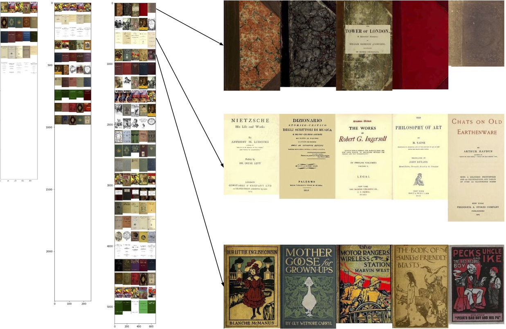

We know we shouldn't judge books by their covers, but what happens when we do? Gutenberg covers tries to sort 1400 book covers from the Gutenberg collection by visual similarity alone. (Work in progress.)
Gutenberg covers

1400 covers sorted by visual similarity, using UMAP and RasterFairy

K-means cluster analysis